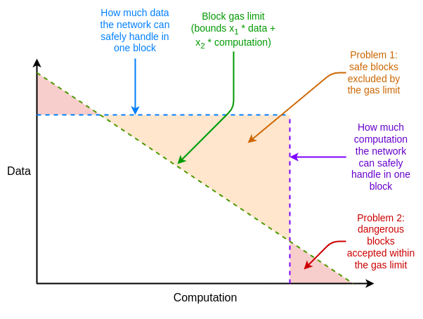
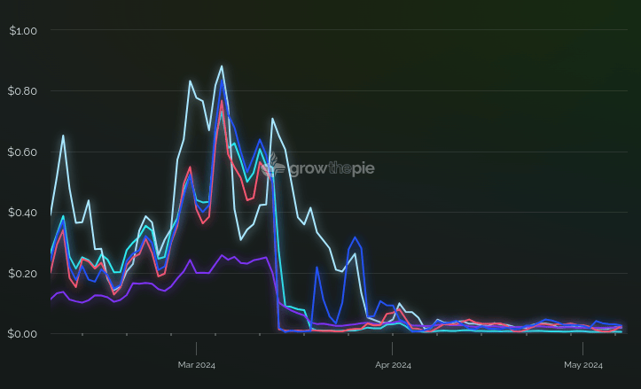
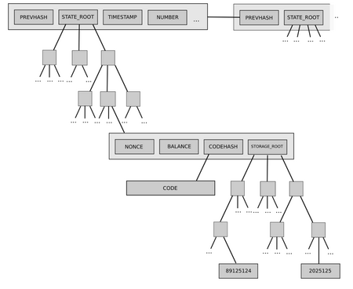
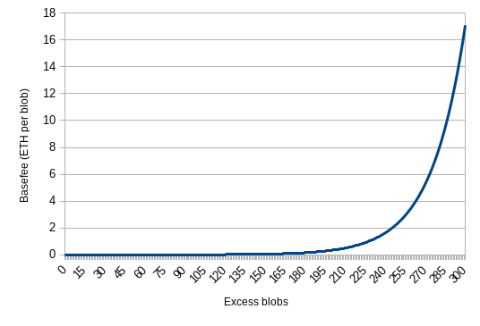
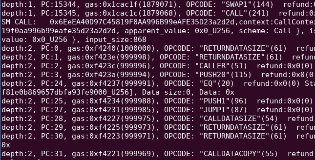
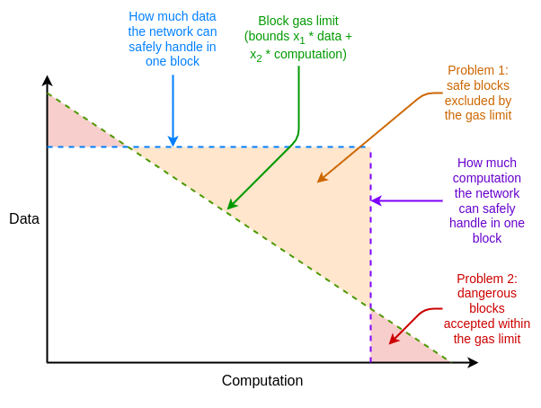
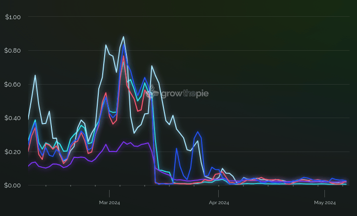
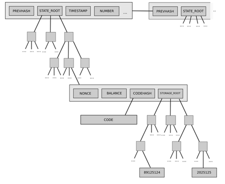
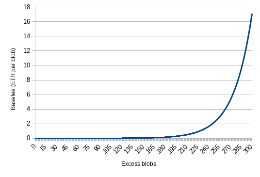
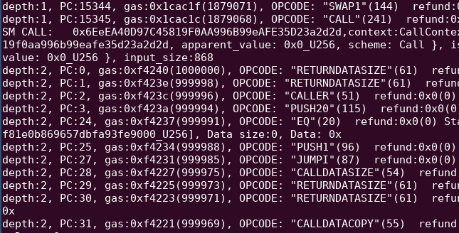

Multidimensional gas pricing
2024 May 09
See all posts
Multidimensional gas pricing
Special thanks to Ansgar Dietrichs, Barnabe Monnot and Davide Crapis for feedback and review.
In Ethereum, resources were up until recently limited, and priced, using a single resource called "gas". Gas is a measure of the amount of "computational effort" needed to process a given transaction or block. Gas merges together multiple types of "effort", most notably:
- Raw computation (eg.
ADD, MULTIPLY)
- Reading and writing to Ethereum's storage (eg.
SSTORE, SLOAD, ETH transfers)
- Data bandwidth
- Cost of generating a ZK-SNARK proof of the block
For example, this transaction that I sent cost a total of 47,085 gas. This is split between (i) a "base cost" of 21000 gas, (ii) 1556 gas for the bytes in the calldata included as part of the transaction (iii) 16500 gas for reading and writing to storage, (iv) gas 2149 for making a log, and the rest for EVM execution. The transaction fee that a user must pay is proportional to the gas that the transaction consumes. A block can contain up to a maximum of 30 million gas, and gas prices are constantly adjusted via the EIP-1559 targeting mechanism, ensuring that on average, blocks contain 15 million gas.
This approach has one major efficiency: because everything is merged into one virtual resource, it leads to a very simple market design. Optimizing a transaction to minimize costs is easy, optimizing a block to collect the highest possible fees is relatively easy (not including MEV), and there are no weird incentives that encourage some transactions to bundle with other transactions to save on fees.
But this approach also has one major inefficiency: it treats different resources as being mutually convertible, when the actual underlying limits of what the network can handle are not. One way to understand this issue is to look at this diagram:

The gas limit enforces a constraint of \(x_1 * data + x_2 * computation < N\). The actual underlying safety constraint is often closer to \(max(x_1 * data, x_2 * computation) < N\). This discrepancy leads to either the gas limit needlessly excluding actually-safe blocks, or accepting actually-unsafe blocks, or some mixture of both.
If there are \(n\) resources that have distinct safety limits, then one-dimensional gas plausibly reduces throughput by up to a factor of \(n\). For this reason, there has for a long time been interest in the concept of multi-dimensional gas, and with EIP-4844 we actually have multi-dimensional gas working on Ethereum today. This post explores the benefits of this approach, and the prospects for increasing it further.
Blobs: multi-dimensional gas in Dencun
At the start of this year, the average block was 150 kB in size. A large fraction of that size is rollup data: layer 2 protocols storing data on chain for security. This data was expensive: even though transactions on rollups would cost ~5-10x less than corresponding transactions on the Ethereum L1, even that cost was too high for many use cases.
Why not decrease the calldata gas cost (currently 16 gas per nonzero byte and 4 gas per zero byte), to make rollups cheaper? We did this before, we could do it again. The answer here is: the worst-case size of a block was \(\frac{30,000,000}{16} = 1,875,000\) nonzero bytes, and the network already can barely handle blocks of that size. Reducing costs by another 4x would raise the maximum to 7.5 MB, which would be a huge risk to safety.
This problem ended up being handled by introducing a separate space of rollup-friendly data, known as "blobs", into each block. The two resources have separate prices and separate limits: after the Dencun hard fork, an Ethereum block can contain at most (i) 30 million gas, and (ii) 6 blobs, which can contain ~125 kB of calldata each. Both resources have separate prices, adjusted by separate EIP-1559-like pricing mechanisms, targeting an average usage of 15 million gas and 3 blobs per block.
As a result, rollups have become 100x cheaper, transaction volume on rollups increased by more than 3x, and the theoretical maximum block size was only increased slightly: from ~1.9 MB to ~2.6 MB.

Transaction fees on rollups, courtesy of growthepie.xyz. The Dencun fork, which introduced blobs with multidimensional pricing, happened on 2024 Mar 13.
Multi-dimensional gas and stateless clients
In the near future, a similar problem will arise regarding storage proofs for stateless clients. Stateless clients are a new type of client which will be able to verify the chain without storing much or any data locally. Stateless clients do this by accepting proofs of the specific pieces of Ethereum state that transactions in that block need to touch.

A stateless client receives a block, together with proofs proving the current values in the specific parts of the state (eg. account balances, code, storage) that the block execution touches. This allows a node to verify a block without having any storage itself.
A storage read costs 2100-2600 gas depending on the type of read, and storage writes cost more. On average, a block does something like 1000 storage reads and writes (including ETH balance checks, SSTORE and SLOAD calls, contract code reading, and other operations). The theoretical maximum, however, is \(\frac{30,000,000}{2,100} = 14,285\) reads. A stateless client's bandwidth load is directly proportional to this number.
Today, the plan is to support stateless clients by moving Ethereum's state tree design from Merkle Patricia trees to Verkle trees. However, Verkle trees are not quantum-resistant, and are not optimal for newer waves of STARK proving systems. As a result, many people are interested in supporting stateless clients through binary Merkle trees and STARKs instead - either skipping Verkle entirely, or upgrading a couple of years after the Verkle transition once STARKs become more mature.
STARK proofs of binary hash tree branches have many advantages, but they have the key weakness that proofs take a long time to generate: while Verkle trees can prove over a hundred thousand values per second, hash-based STARKs can typically prove only a couple thousand hashes per second, and proving each value requires a "branch" containing many hashes.
Given the numbers that are being projected today from hyper-optimized proof systems such as Binius and Plonky3 and specialized hashes like Vision-Mark-32, it seems likely that we will for some time be in a regime where it's practical to prove 1,000 values in less than a second, but not 14,285 values. Average blocks would be fine, but worst-case blocks, potentially published by an attacker, would break the network.
The "default" way we have handled such a scenario is re-pricing: make storage reading more expensive to reduce the per-block maximum to something safer. However, we have already done this many times, and it would make too many applications too expensive to do this again. A better approach would be multidimensional gas: limit and charge for storage access separately, keeping the average usage at 1,000 storage accesses per block but setting a per-block limit of eg. 2,000.
Multidimensional gas more generally
One other resource that is worth thinking about is state size growth: operations that increase the size of the Ethereum state, which full nodes will need to hold from then on. The unique property of state size growth is that the rationale from limiting it comes entirely from long-run sustained usage, and not spikes. Hence, there may be value in adding a separate gas dimension for state size increasing operations (eg. zero-to-nonzero SSTORE, contract creation), but with a differnet goal: we could set a floating price to target a specific average usage, but set no per-block limit at all.
This shows one of the powerful properties of multidimensional gas: it lets us separately ask the questions of (i) what is the ideal average usage, and (ii) what is the safe per-block maximum usage, for each resource. Rather than setting gas prices based on per-block maximums, and letting average usage follow, we have \(2n\) degrees of freedom to set \(2n\) parameters, tuning each one based on what is safe for the network.
More complicated situations, like where two resources have safety considerations that are partially additive, could be handled by making an opcode or resource cost some quantity of multiple types of gas (eg. a zero-to-nonzero SSTORE could cost 5000 stateless-client-proof gas and 20000 storage-expansion gas).
Per-transaction max: the weaker-but-easier way to get multidimensional gas
Let \(x_1\) be the gas cost of data and \(x_2\) be the gas cost of computation, so in a one-dimensional gas system we can write the gas cost of a transaction:
\[gas = x_1 * data + x_2 * computation\]
In this scheme, we instead define the gas cost of a transaction as:
\[gas = max(x_1 * data, x_2 * computation)\]
That is, instead of a transaction being charged for data plus computation, the transaction gets charged based on which of the two resources it consumes more of. This can easily be extended to cover more dimensions (eg. \(max(..., x_3 * storage\_access)\)).
It should be easy to see how this improves throughput while preserving safety. The theoretical max amount of data in a block is still \(\frac{GASLIMIT}{x_1}\), exactly the same as in the one-dimensional gas scheme. Similarly, the theoretical max amount of computation is \(\frac{GASLIMIT}{x_2}\), again exactly the same as in the one-dimensional gas scheme. However, the gas cost of any transaction that consumes both data and computation decreases.
This is approximately the scheme employed in the proposed EIP-7623, to reduce maximum block size while increasing blob count further. The precise mechanism in EIP-7623 is slightly more complicated: it keeps the current calldata price of 16 gas per byte, but it adds a "floor price" of 48 gas per byte; a transaction pays the higher of (16 * bytes + execution_gas) and (48 * bytes). As a result, EIP-7623 decreases the theoretical max transaction calldata in a block from ~1.9 MB to ~0.6 MB, while leaving the costs of most applications unchanged. The benefit of this approach is that it is a very small change from the current single-dimensional gas scheme, and so it is very easy to implement.
There are two drawbacks:
- Transactions that are heavy on one resource are still needlessly charged a large amount, even if all the other transactions in the block use little of that resource.
- It creates incentives for data-heavy and computation-heavy transactions to merge together into a bundle to save costs.
I would argue that an EIP-7623-style rule, both for transaction calldata and for other resources, can bring large-enough benefits to be worth it even despite these drawbacks. However, if and when we are willing to put in the (significantly higher) development effort, there is a more ideal approach.
Multidimensional EIP-1559: the harder-but-ideal strategy
Let us first recap how "regular" EIP-1559 works. We will focus on the version that was introduced in EIP-4844 for blobs, because it's mathematically more elegant.
We track a parameter, excess_blobs. During each block, we set:
excess_blobs <-- max(excess_blobs + len(block.blobs) - TARGET, 0)
Where TARGET = 3. That is, if a block has more blobs than the target, excess_blobs increases, and if a block has less than the target, it decreases. We then set blob_basefee = exp(excess_blobs / 25.47), where exp is an approximation of the exponential function \(exp(x) = 2.71828^x\).

That is, whenever excess_blobs increases by ~25, the blob basefee increases by a factor of ~2.7. If blobs get too expensive, average usage drops, and excess_blobs starts decreasing, automatically dropping the price again. The price of a blob constantly adjusts to make sure that on average, blocks are half full - that is, they contain an average of 3 blobs each.
If there is a short term spike in usage, then the limit kicks in: each block can only contain a maximum of 6 blobs, and in such a circumstance transactions can compete with each other by bidding up their priority fees. In the normal case, however, each blob only needs to pay the blob_basefee plus a tiny extra priority fee as an incentive to get included at all.
This kind of pricing existed in Ethereum for gas for years: a very similar mechanism was introduced with EIP-1559 back in 2020. With EIP-4844, we now have two separately floating prices for gas and for blobs.

Gas base fee over the course of one hour on 2024-05-08, in gwei. Source: ultrasound.money.
In principle, we could add more separately-floating fees for storage reading, and other kinds of operations, though with one caveat that I will expand on in the next section.
For users, the experience is remarkably similar to today: instead of paying one basefee, you pay two basefees, but your wallet can abstract that away from you and just show you the expected fee and maximum fee that you can expect to pay.
For block builders, most of the time the optimal strategy is the same as today: include anything that is valid. Most blocks are not full - neither in gas nor in blobs. The one challenging case is when there is enough gas or enough blobs to exceed the block limit, and the builder needs to potentially solve a multidimensional knapsack problem to maximize its profit. However, even there pretty good approximation algorithms exist, and the gains from making proprietary algorithms to optimize profits in this case are much smaller than the gains from doing the same with MEV.
For developers, the main challenge is the need to redesign features of the EVM, and its surrounding infrastructure, that is designed around one price and one limit today into a design that accommodates multiple prices and multiple limits. One issue for application developers is that optimization becomes slightly harder: in some cases, you can no longer unambiguously say that A is more efficient than B, because if A uses more calldata but B uses more execution, then A might be cheaper when calldata is cheap, and more expensive when calldata is expensive. However, developers would still be able to get reasonably good results by optimizing based on long-run historical average prices.
Multidimensional pricing, the EVM and sub-calls
There is one problem that did not appear with blobs, and will not appear with EIP-7623 or even a "full" multidimensional pricing implementation for calldata, but will appear if we try to separately price state accesses, or any other resource: gas limits in sub-calls.
Gas limits in the EVM exist in two places. First, each transaction sets a gas limit, which caps the total amount of gas that can be used in that transaction. Second, when a contract calls another contract, the call can set its own gas limit. This allows contracts to call other contracts that they do not trust, and still guarantee that they will have gas left over to perform other computations after that call.

A trace of an account abstraction transaction, where an account calls another account, and only gives the callee a limited amount of gas, to ensure that the outer call can keep running even if the callee consumes the entire gas that was assigned to it.
The challenge is: making gas multidimensional between different types of execution seems like it would require sub-calls to provide multiple limits for each type of gas, which would require a really deep change to the EVM, and would not be compatible with existing applications.
This is one reason why multidimensional gas proposals often stop at two dimensions: data and execution. Data (whether transaction calldata or blobs) is only assigned outside the EVM, and so nothing inside the EVM needs to change to make calldata or blobs separately priced.
We can think of an "EIP-7623-style solution" to this problem. Here is one simple implementation: during execution, charge 4x more for storage operations; to simplify the analysis, let's say 10000 gas per storage operation. At the end of the transaction, refund min(7500 * storage_operations, execution_gas). The result would be that, after subtracting out the refund, a user is charged:
execution_gas + 10000 * storage_operations - min(7500 * storage_operations, execution_gas)
Which equals:
max(execution_gas + 2500 * storage_operations, 10000 * storage_operations)
This mirrors the structure of EIP-7623. Another way to do it is to track storage_operations and execution_gas in real time, and charge either 2500 or 10000 depending on how much max(execution_gas + 2500 * storage_operations, 10000 * storage_operations) goes up at the time that the opcode is called. This avoids the need for transactions to over-allocate gas that they will mostly get back through refunds.
We don't get fine-grained permissioning for sub-calls: a sub-call could consume all of a transaction's "allowance" for cheap storage operations. But we do get something good enough, where a contract making a sub-call can set a limit and ensure that once the sub-call finishes executing, the main call still has enough gas to do whatever post-processing it needs to do.
The easiest "full multidimensional pricing solution" that I can think of is: we treat sub-call gas limits as being proportional. That is, suppose that there are \(k\) different types of execution, and each transaction sets a multi-dimensional limit \(L_1 ... L_k\). Suppose that, at the current point in execution, the remaining gas is \(g_1 ... g_k\). Suppose that a CALL opcode is called, with sub-call gas limit \(S\). Let \(s_1 = S\), and then \(s_2 = \frac{s_1}{g_1} * g_2\), \(s_3 = \frac{s_1}{g_1} * g_3\), and so on.
That is, we treat the first type of gas (realistically, VM execution) as being a kind of privileged "unit of account", and then assign the other types of gas so that the sub-call gets the same percentage of available gas across each type. This is somewhat ugly, but it maximizes backwards-compatibility. If we want to make the scheme more "neutral" between different types of gas, at the cost of sacrificing backwards-compatibility, we could simply have the sub-call gas limit parameter represent a fraction (eg. [1...63] / 64) of the remaining gas in the current context).
In either case, however, it's worth stressing that once you start introducing multidimensional execution gas, the inherent level of ugliness increases, and this seems difficult to avoid. Hence, our task is to make a complicated tradeoff: do we accept somewhat more ugliness at the EVM level, in order to safely unlock significant L1 scalability gains, and if so, which specific proposal works best for protocol economics and application developers? Quite likely, it is neither of the ones I mentioned above, and there is still room to come up with something more elegant and better.
Multidimensional gas pricing
2024 May 09 See all postsSpecial thanks to Ansgar Dietrichs, Barnabe Monnot and Davide Crapis for feedback and review.
In Ethereum, resources were up until recently limited, and priced, using a single resource called "gas". Gas is a measure of the amount of "computational effort" needed to process a given transaction or block. Gas merges together multiple types of "effort", most notably:
ADD,MULTIPLY)SSTORE,SLOAD, ETH transfers)For example, this transaction that I sent cost a total of 47,085 gas. This is split between (i) a "base cost" of 21000 gas, (ii) 1556 gas for the bytes in the calldata included as part of the transaction (iii) 16500 gas for reading and writing to storage, (iv) gas 2149 for making a log, and the rest for EVM execution. The transaction fee that a user must pay is proportional to the gas that the transaction consumes. A block can contain up to a maximum of 30 million gas, and gas prices are constantly adjusted via the EIP-1559 targeting mechanism, ensuring that on average, blocks contain 15 million gas.
This approach has one major efficiency: because everything is merged into one virtual resource, it leads to a very simple market design. Optimizing a transaction to minimize costs is easy, optimizing a block to collect the highest possible fees is relatively easy (not including MEV), and there are no weird incentives that encourage some transactions to bundle with other transactions to save on fees.
But this approach also has one major inefficiency: it treats different resources as being mutually convertible, when the actual underlying limits of what the network can handle are not. One way to understand this issue is to look at this diagram:

The gas limit enforces a constraint of \(x_1 * data + x_2 * computation < N\). The actual underlying safety constraint is often closer to \(max(x_1 * data, x_2 * computation) < N\). This discrepancy leads to either the gas limit needlessly excluding actually-safe blocks, or accepting actually-unsafe blocks, or some mixture of both.
If there are \(n\) resources that have distinct safety limits, then one-dimensional gas plausibly reduces throughput by up to a factor of \(n\). For this reason, there has for a long time been interest in the concept of multi-dimensional gas, and with EIP-4844 we actually have multi-dimensional gas working on Ethereum today. This post explores the benefits of this approach, and the prospects for increasing it further.
Blobs: multi-dimensional gas in Dencun
At the start of this year, the average block was 150 kB in size. A large fraction of that size is rollup data: layer 2 protocols storing data on chain for security. This data was expensive: even though transactions on rollups would cost ~5-10x less than corresponding transactions on the Ethereum L1, even that cost was too high for many use cases.
Why not decrease the calldata gas cost (currently 16 gas per nonzero byte and 4 gas per zero byte), to make rollups cheaper? We did this before, we could do it again. The answer here is: the worst-case size of a block was \(\frac{30,000,000}{16} = 1,875,000\) nonzero bytes, and the network already can barely handle blocks of that size. Reducing costs by another 4x would raise the maximum to 7.5 MB, which would be a huge risk to safety.
This problem ended up being handled by introducing a separate space of rollup-friendly data, known as "blobs", into each block. The two resources have separate prices and separate limits: after the Dencun hard fork, an Ethereum block can contain at most (i) 30 million gas, and (ii) 6 blobs, which can contain ~125 kB of calldata each. Both resources have separate prices, adjusted by separate EIP-1559-like pricing mechanisms, targeting an average usage of 15 million gas and 3 blobs per block.
As a result, rollups have become 100x cheaper, transaction volume on rollups increased by more than 3x, and the theoretical maximum block size was only increased slightly: from ~1.9 MB to ~2.6 MB.

Transaction fees on rollups, courtesy of growthepie.xyz. The Dencun fork, which introduced blobs with multidimensional pricing, happened on 2024 Mar 13.
Multi-dimensional gas and stateless clients
In the near future, a similar problem will arise regarding storage proofs for stateless clients. Stateless clients are a new type of client which will be able to verify the chain without storing much or any data locally. Stateless clients do this by accepting proofs of the specific pieces of Ethereum state that transactions in that block need to touch.

A stateless client receives a block, together with proofs proving the current values in the specific parts of the state (eg. account balances, code, storage) that the block execution touches. This allows a node to verify a block without having any storage itself.
A storage read costs 2100-2600 gas depending on the type of read, and storage writes cost more. On average, a block does something like 1000 storage reads and writes (including ETH balance checks,
SSTOREandSLOADcalls, contract code reading, and other operations). The theoretical maximum, however, is \(\frac{30,000,000}{2,100} = 14,285\) reads. A stateless client's bandwidth load is directly proportional to this number.Today, the plan is to support stateless clients by moving Ethereum's state tree design from Merkle Patricia trees to Verkle trees. However, Verkle trees are not quantum-resistant, and are not optimal for newer waves of STARK proving systems. As a result, many people are interested in supporting stateless clients through binary Merkle trees and STARKs instead - either skipping Verkle entirely, or upgrading a couple of years after the Verkle transition once STARKs become more mature.
STARK proofs of binary hash tree branches have many advantages, but they have the key weakness that proofs take a long time to generate: while Verkle trees can prove over a hundred thousand values per second, hash-based STARKs can typically prove only a couple thousand hashes per second, and proving each value requires a "branch" containing many hashes.
Given the numbers that are being projected today from hyper-optimized proof systems such as Binius and Plonky3 and specialized hashes like Vision-Mark-32, it seems likely that we will for some time be in a regime where it's practical to prove 1,000 values in less than a second, but not 14,285 values. Average blocks would be fine, but worst-case blocks, potentially published by an attacker, would break the network.
The "default" way we have handled such a scenario is re-pricing: make storage reading more expensive to reduce the per-block maximum to something safer. However, we have already done this many times, and it would make too many applications too expensive to do this again. A better approach would be multidimensional gas: limit and charge for storage access separately, keeping the average usage at 1,000 storage accesses per block but setting a per-block limit of eg. 2,000.
Multidimensional gas more generally
One other resource that is worth thinking about is state size growth: operations that increase the size of the Ethereum state, which full nodes will need to hold from then on. The unique property of state size growth is that the rationale from limiting it comes entirely from long-run sustained usage, and not spikes. Hence, there may be value in adding a separate gas dimension for state size increasing operations (eg. zero-to-nonzero
SSTORE, contract creation), but with a differnet goal: we could set a floating price to target a specific average usage, but set no per-block limit at all.This shows one of the powerful properties of multidimensional gas: it lets us separately ask the questions of (i) what is the ideal average usage, and (ii) what is the safe per-block maximum usage, for each resource. Rather than setting gas prices based on per-block maximums, and letting average usage follow, we have \(2n\) degrees of freedom to set \(2n\) parameters, tuning each one based on what is safe for the network.
More complicated situations, like where two resources have safety considerations that are partially additive, could be handled by making an opcode or resource cost some quantity of multiple types of gas (eg. a zero-to-nonzero
SSTOREcould cost 5000 stateless-client-proof gas and 20000 storage-expansion gas).Per-transaction max: the weaker-but-easier way to get multidimensional gas
Let \(x_1\) be the gas cost of data and \(x_2\) be the gas cost of computation, so in a one-dimensional gas system we can write the gas cost of a transaction:
\[gas = x_1 * data + x_2 * computation\]
In this scheme, we instead define the gas cost of a transaction as:
\[gas = max(x_1 * data, x_2 * computation)\]
That is, instead of a transaction being charged for data plus computation, the transaction gets charged based on which of the two resources it consumes more of. This can easily be extended to cover more dimensions (eg. \(max(..., x_3 * storage\_access)\)).
It should be easy to see how this improves throughput while preserving safety. The theoretical max amount of data in a block is still \(\frac{GASLIMIT}{x_1}\), exactly the same as in the one-dimensional gas scheme. Similarly, the theoretical max amount of computation is \(\frac{GASLIMIT}{x_2}\), again exactly the same as in the one-dimensional gas scheme. However, the gas cost of any transaction that consumes both data and computation decreases.
This is approximately the scheme employed in the proposed EIP-7623, to reduce maximum block size while increasing blob count further. The precise mechanism in EIP-7623 is slightly more complicated: it keeps the current calldata price of 16 gas per byte, but it adds a "floor price" of 48 gas per byte; a transaction pays the higher of (
16 * bytes + execution_gas) and (48 * bytes). As a result, EIP-7623 decreases the theoretical max transaction calldata in a block from ~1.9 MB to ~0.6 MB, while leaving the costs of most applications unchanged. The benefit of this approach is that it is a very small change from the current single-dimensional gas scheme, and so it is very easy to implement.There are two drawbacks:
I would argue that an EIP-7623-style rule, both for transaction calldata and for other resources, can bring large-enough benefits to be worth it even despite these drawbacks. However, if and when we are willing to put in the (significantly higher) development effort, there is a more ideal approach.
Multidimensional EIP-1559: the harder-but-ideal strategy
Let us first recap how "regular" EIP-1559 works. We will focus on the version that was introduced in EIP-4844 for blobs, because it's mathematically more elegant.
We track a parameter,
excess_blobs. During each block, we set:excess_blobs <-- max(excess_blobs + len(block.blobs) - TARGET, 0)Where
TARGET = 3. That is, if a block has more blobs than the target,excess_blobsincreases, and if a block has less than the target, it decreases. We then setblob_basefee = exp(excess_blobs / 25.47), whereexpis an approximation of the exponential function \(exp(x) = 2.71828^x\).
That is, whenever
excess_blobsincreases by ~25, the blob basefee increases by a factor of ~2.7. If blobs get too expensive, average usage drops, andexcess_blobsstarts decreasing, automatically dropping the price again. The price of a blob constantly adjusts to make sure that on average, blocks are half full - that is, they contain an average of 3 blobs each.If there is a short term spike in usage, then the limit kicks in: each block can only contain a maximum of 6 blobs, and in such a circumstance transactions can compete with each other by bidding up their priority fees. In the normal case, however, each blob only needs to pay the
blob_basefeeplus a tiny extra priority fee as an incentive to get included at all.This kind of pricing existed in Ethereum for gas for years: a very similar mechanism was introduced with EIP-1559 back in 2020. With EIP-4844, we now have two separately floating prices for gas and for blobs.
Gas base fee over the course of one hour on 2024-05-08, in gwei. Source: ultrasound.money.
In principle, we could add more separately-floating fees for storage reading, and other kinds of operations, though with one caveat that I will expand on in the next section.
For users, the experience is remarkably similar to today: instead of paying one basefee, you pay two basefees, but your wallet can abstract that away from you and just show you the expected fee and maximum fee that you can expect to pay.
For block builders, most of the time the optimal strategy is the same as today: include anything that is valid. Most blocks are not full - neither in gas nor in blobs. The one challenging case is when there is enough gas or enough blobs to exceed the block limit, and the builder needs to potentially solve a multidimensional knapsack problem to maximize its profit. However, even there pretty good approximation algorithms exist, and the gains from making proprietary algorithms to optimize profits in this case are much smaller than the gains from doing the same with MEV.
For developers, the main challenge is the need to redesign features of the EVM, and its surrounding infrastructure, that is designed around one price and one limit today into a design that accommodates multiple prices and multiple limits. One issue for application developers is that optimization becomes slightly harder: in some cases, you can no longer unambiguously say that A is more efficient than B, because if A uses more calldata but B uses more execution, then A might be cheaper when calldata is cheap, and more expensive when calldata is expensive. However, developers would still be able to get reasonably good results by optimizing based on long-run historical average prices.
Multidimensional pricing, the EVM and sub-calls
There is one problem that did not appear with blobs, and will not appear with EIP-7623 or even a "full" multidimensional pricing implementation for calldata, but will appear if we try to separately price state accesses, or any other resource: gas limits in sub-calls.
Gas limits in the EVM exist in two places. First, each transaction sets a gas limit, which caps the total amount of gas that can be used in that transaction. Second, when a contract calls another contract, the call can set its own gas limit. This allows contracts to call other contracts that they do not trust, and still guarantee that they will have gas left over to perform other computations after that call.

A trace of an account abstraction transaction, where an account calls another account, and only gives the callee a limited amount of gas, to ensure that the outer call can keep running even if the callee consumes the entire gas that was assigned to it.
The challenge is: making gas multidimensional between different types of execution seems like it would require sub-calls to provide multiple limits for each type of gas, which would require a really deep change to the EVM, and would not be compatible with existing applications.
This is one reason why multidimensional gas proposals often stop at two dimensions: data and execution. Data (whether transaction calldata or blobs) is only assigned outside the EVM, and so nothing inside the EVM needs to change to make calldata or blobs separately priced.
We can think of an "EIP-7623-style solution" to this problem. Here is one simple implementation: during execution, charge 4x more for storage operations; to simplify the analysis, let's say
10000gas per storage operation. At the end of the transaction, refundmin(7500 * storage_operations, execution_gas). The result would be that, after subtracting out the refund, a user is charged:execution_gas + 10000 * storage_operations - min(7500 * storage_operations, execution_gas)Which equals:
max(execution_gas + 2500 * storage_operations, 10000 * storage_operations)This mirrors the structure of EIP-7623. Another way to do it is to track
storage_operationsandexecution_gasin real time, and charge either 2500 or 10000 depending on how muchmax(execution_gas + 2500 * storage_operations, 10000 * storage_operations)goes up at the time that the opcode is called. This avoids the need for transactions to over-allocate gas that they will mostly get back through refunds.We don't get fine-grained permissioning for sub-calls: a sub-call could consume all of a transaction's "allowance" for cheap storage operations. But we do get something good enough, where a contract making a sub-call can set a limit and ensure that once the sub-call finishes executing, the main call still has enough gas to do whatever post-processing it needs to do.
The easiest "full multidimensional pricing solution" that I can think of is: we treat sub-call gas limits as being proportional. That is, suppose that there are \(k\) different types of execution, and each transaction sets a multi-dimensional limit \(L_1 ... L_k\). Suppose that, at the current point in execution, the remaining gas is \(g_1 ... g_k\). Suppose that a
CALLopcode is called, with sub-call gas limit \(S\). Let \(s_1 = S\), and then \(s_2 = \frac{s_1}{g_1} * g_2\), \(s_3 = \frac{s_1}{g_1} * g_3\), and so on.That is, we treat the first type of gas (realistically, VM execution) as being a kind of privileged "unit of account", and then assign the other types of gas so that the sub-call gets the same percentage of available gas across each type. This is somewhat ugly, but it maximizes backwards-compatibility. If we want to make the scheme more "neutral" between different types of gas, at the cost of sacrificing backwards-compatibility, we could simply have the sub-call gas limit parameter represent a fraction (eg.
[1...63] / 64) of the remaining gas in the current context).In either case, however, it's worth stressing that once you start introducing multidimensional execution gas, the inherent level of ugliness increases, and this seems difficult to avoid. Hence, our task is to make a complicated tradeoff: do we accept somewhat more ugliness at the EVM level, in order to safely unlock significant L1 scalability gains, and if so, which specific proposal works best for protocol economics and application developers? Quite likely, it is neither of the ones I mentioned above, and there is still room to come up with something more elegant and better.